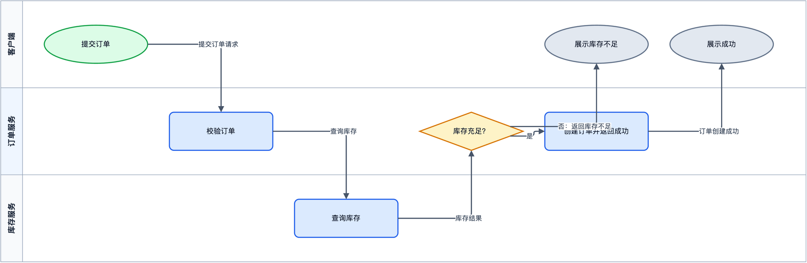
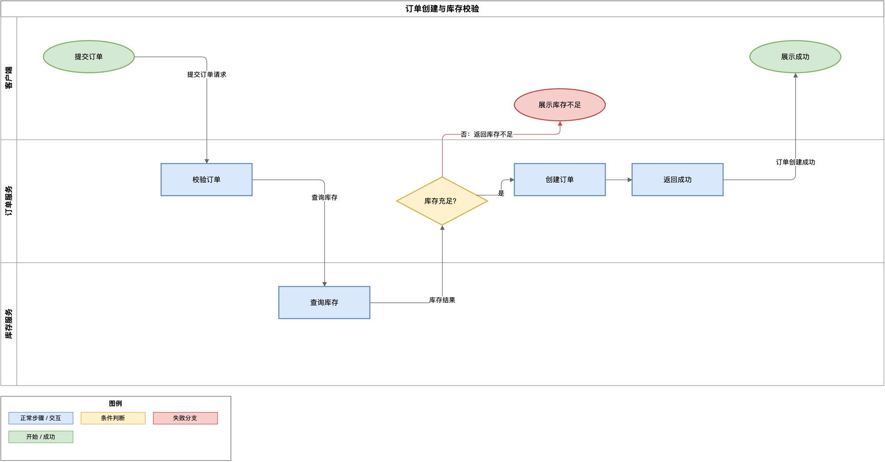
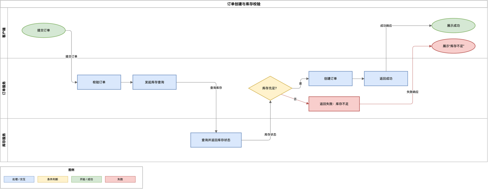
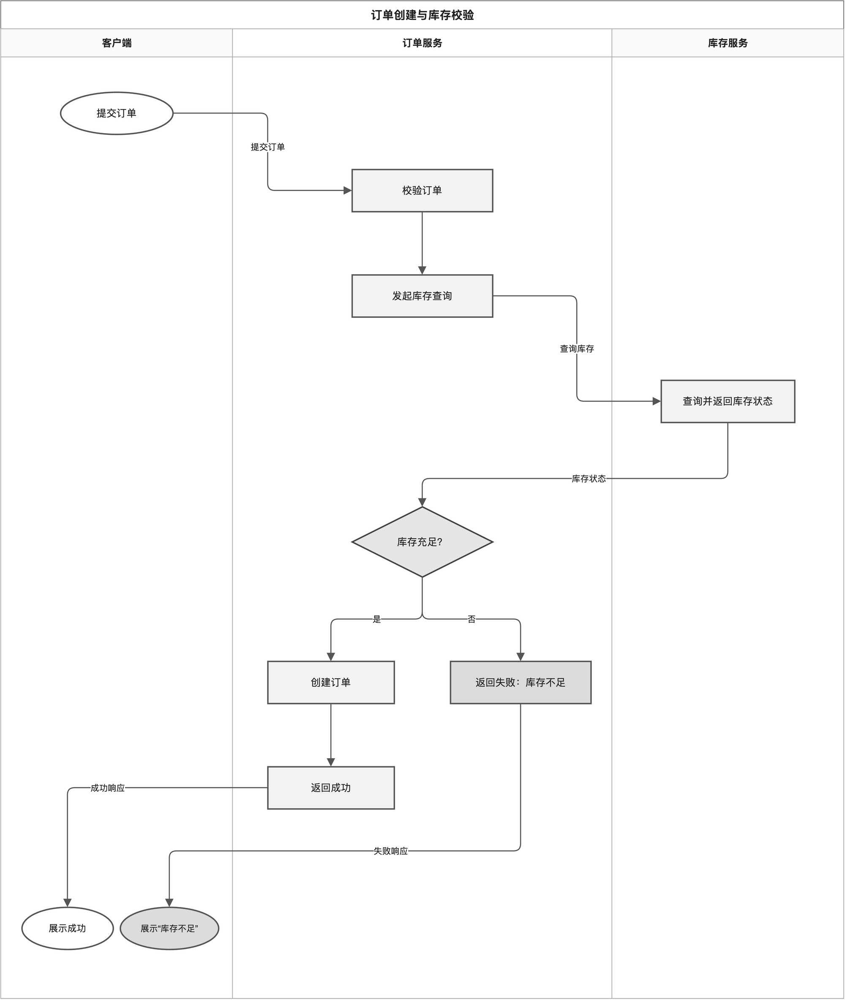

同一需求的四张系统交互流程图
点击图片可查看原尺寸；每张图都可下载原生 .drawio 继续编辑。
1. 之前的专用 Demo

查看 PNG
下载 .drawio
2. 之前的上游原版效果

查看 PNG
下载 .drawio
3. text2drawio-skill 优化前

查看 PNG
下载 .drawio
4. text2drawio-skill 优化后（竖向泳道 · 灰度）

查看 PNG
下载 .drawio